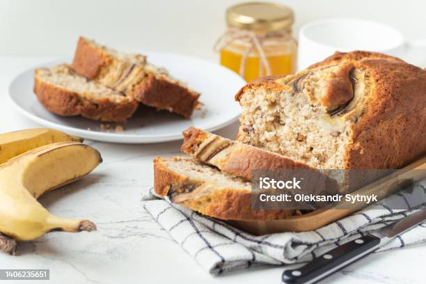

Home
Banana Bread

Description
Chewy, moist, and sweet like a temperate spring day, banana bread is a favorite in our household. This recipe is perfect for when you've overestimated your family's capacity to finish off a bunch of bananas before they go bad. Not to worry, you can give these abandoned fruits a whole new life with just a bit of baking magic!
Ingredients
- Flour: 2 cups
- Baking soda: 1 teaspoon
- Salt: 1/4 teaspoon
- Brown sugar: 3/4 cup
- Butter: 1/2 cup
- 2 Large eggs, beaten
- Overripe bananas: 2 1/3 cups (around 4-5 bananas)
- (Optional) About 1 cup of any nuts or other additions you may like. My favorite is chocolate chips!
Steps
(It is helpful to leave the butter on the counter to soften a few hours before you make your batter. Alternatively you can use a microwave to soften it.)
- Gather all ingredients and preheat oven to 350 degrees F (175 degrees C). Lightly grease a 9x5 inch loaf pan with an oil of your choice.
- Peel and mash overripe bananas in a medium-sized bowl.
- Combine dry ingredients in a large bowl, whisking until evenly incorporated.
- Beat brown sugar and butter in a separate large bowl until smooth. (Using an electric mixer is easiest, but a little elbow grease can go a long way!)
- Stir eggs and mashed bananas into the sugar and butter mixture until well blended.
- Stir flour mixture into banana mixture until just combined.
- Stir in any additions until just combined.
- Pour batter into the greased loaf pan.
- Bake in the preheated oven about 60 minutes, though this may vary. Check often around the 60-minute mark and use a toothpick to inseert into the center. If it comes out clean, it's ready!
- Let bread cool in pan for 10 minutes, then turn out onto a wire rack to cool completely.
- Bask in the glory of your delcious loaf! Slice and serve.